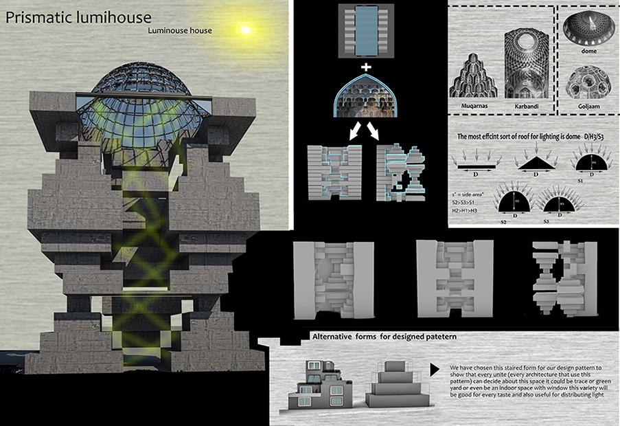
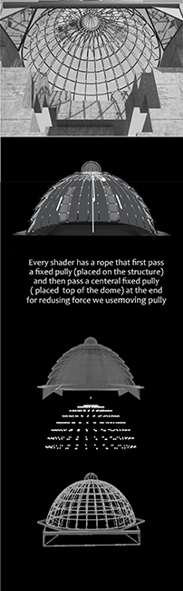

The competition perpose
was to design an
efficient way to
use daylight.
we depict the day
light problem in
residental complexes .
▾


we wanted to light to enter from the top of the building, so the shape
of the ceiling was crucial.
The most critical factor was the area
of the ceiling
because if the area was vast, the entering light would
increase. So, dome shape ceilings are better
than other alternatives.
Another reason to choose dome shape is that they distribute lights
in every
direction. (It was used for this function in
traditional architecture).
We also compared and calculated different
dome-like oval dome or circle dome. In the end,
we chose the
“slow Hooloochin” arch to design dome because it is an oval dome,
and that provides
the maximum area, which is preferable.
▾
Still, along the elliptical base arch, we wanted to choose
an arch that has less
height because we did not wish to tarp the heat on its top, especially
for
the cold season, and for the hot season, we offered the use of
a shader. In conclusion, we designed a segmental dome by prisms, so to fulfill ventilation needs. That would
happen because the pieces were arrayed in such a way that has a gap for ventilation by chimney effect
and also does not let rain in.
Another element that was used for traditional public bath for lighting called “Goljaam” is (made of glass)
it fills the hole top of the dome to trap the heat and also distribute and increase the light.
Our designed dome is inspired of Goljaam function and concept.
▾
We observe domes and vaults in spreading light we understand in addition to their structural or decorative
roles architects use “Karbandi” and “Muqarnas” to spread light and guide it in every direction.
Karbandi is a geometric design of a masonry lattice space dome titled KARBANDI in Persian architecture.
Muqarnas is a type of corbel used for decoration in Islamic and Persian architecture.
Karbandi and Muqarnas, besides their structural and decorative role, participate in distribution of light
by segmenting domes or vaults in little pieces. Considering that, we decided to design the form of
building inspired by Karbandi and Muqarnas so that we could spread the light all over the building.
In reality, the fractures (stairs shapes) cause changing light direction and reflection.
These reflections and distribution among dome and pieces of this building make the place brighter
for everyone.
Back to timeline